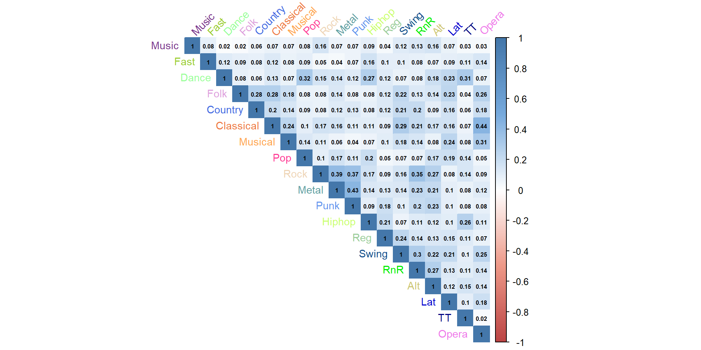
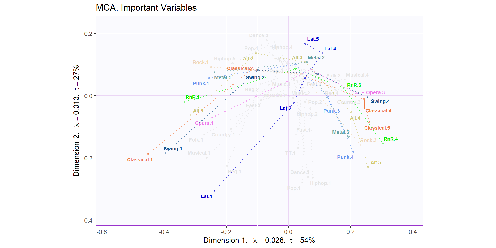

Chapter 3 Multiple Correspondence Analysis
This method is an extension of PCA but analyzes categorical data instead. In some respects it is analogous to CA but uses binary data instead. MCA can also be adapted to quantitative data that is scored, for example, -5 to 5 and then binned to represent a pattern of 0 and 1 data entries.
3.1 Cleaning the data
This is the same data from PCA, containing Music preferences. I cleaned the data by binned the data in to roughly equal groups. For example, for the question of Music preferences, I binned the first 4 scores into one group and left the score of 5 in its own group. There are 918 survey participants and 20 variables, including Gender.
hist.Mu <- hist(rawData2[,2], breaks = 20) # 1 to 4 and 53.2 Recoding the data
head(rawData4) %>%
kbl() %>%
kable_paper("hover", full_width = F)| Music | Fast | Dance | Folk | Country | Classical | Musical | Pop | Rock | Metal | Punk | Hiphop | Reg | Swing | RnR | Alt | Lat | TT | Opera | Age | Gender | City | Ed |
|---|---|---|---|---|---|---|---|---|---|---|---|---|---|---|---|---|---|---|---|---|---|---|
| 2 | 2 | 1 | 1 | 2 | 2 | 1 | 4 | 3 | 1 | 1 | 1 | 1 | 1 | 2 | 1 | 1 | 1 | 1 | Y | F | V | 3 |
| 1 | 3 | 1 | 1 | 1 | 1 | 2 | 2 | 3 | 3 | 4 | 1 | 3 | 1 | 3 | 4 | 2 | 1 | 1 | Y | F | C | 3 |
| 2 | 3 | 1 | 2 | 3 | 4 | 4 | 2 | 3 | 3 | 4 | 1 | 4 | 3 | 4 | 5 | 5 | 1 | 3 | Y | F | C | 2 |
| 2 | 2 | 1 | 1 | 1 | 1 | 1 | 1 | 1 | 1 | 4 | 2 | 2 | 1 | 1 | 5 | 1 | 2 | 1 | Y | F | C | 3 |
| 2 | 2 | 3 | 3 | 2 | 4 | 3 | 4 | 1 | 1 | 2 | 5 | 3 | 2 | 1 | 2 | 4 | 2 | 2 | Y | F | V | 2 |
| 2 | 2 | 1 | 3 | 2 | 3 | 3 | 1 | 3 | 3 | 3 | 4 | 3 | 4 | 3 | 5 | 3 | 1 | 3 | Y | M | C | 2 |
3.3 Analysis
## ----runMCA-----------------------------------------------
resMCA <- epMCA(cleanData, graphs = FALSE)The Scree plot reveals that three dimensions are important based on the permutation testing and the Kaiser line.
## [1] "It is estimated that your iterations will take 0.17 minutes."
## [1] "R is not in interactive() mode. Resample-based tests will be conducted. Please take note of the progress bar."
## ================================================================================The heat map is done on a Burt Table, which is a frequency table that is dummy coded for the groups of variables. It it based on disjunctive coding, a type of group coding, where either a variable is coded as a 1 or 0. Rock and Metal have a high positive correlation value as does Rock and Punk as well as Metal and Punk. Dance and Dance, Dance and Techno, and Rock and Rock and Roll have high levels of possitive correlation. In addition, Musical and Opera as well as Classical and Opera have notable positive correlation values.

As referenced in the previous comments, Rock, Metal, Punk, Rock and Roll, Opera, and Classical are important contributors to the first dimension.

Rock, Pop, Dance, and Tech, all of which were reference before, are important contributors to the second dimension.

Rock, Metal, Punk, Musical, Classical, and Opera are important contributors to the third dimension.
To read the next graph, the data point near the axis are importantly mostly to that corresponding dimension. Thus, Dance, Techno, and Pop are near the y-axis so they all contribute heavly to the second dimension. Rock, Opera, and Classical are near the x-axis so they all contribute heavly to the first dimension. The farther away from the center of gravity indicates higher variance.
In addition to the variables spotted on the heat map, the next graph captures the important variables based on the contribution level by setting a cut of of 1 divided by the number of dimension (19) in out case, leaving a benchmark of 0.05263.
In addition to what was stated before, dimension 1 and 2 include Latino, Swing, and Alternative. Similarly, dimension 2 and 3 capture Hiphop, Latino, and Alternative.
The variables identified in the heatmap as being important and confirmed with the contribution plots was all stable, indicated by the bootstrap ratios, expect for Rock no being significant in the third dimension. It is called a Psedo Bootstrap Ratio because the variables are binned and are not exact.
Here the binned data is geometrically projected in the first two dimensions. It forms somewhat of an arch with the many of the low-end binned variables, indicating low preference and low agreement, being in the third quadrant, and the high-end binned variables, indicating high preference and high agreement, being in the first and fourth quadrant.
Classical, Swing, Alternative, and Rock and Roll are split by the first dimension, which makes sense as the first dimension accounts for 54% of the variance.
Latino has an interesting pattern. If you have a high preference for Latino, you tend to have a mid-range preference for Alternative, Metal, Opera, and Rock and Roll. If you don’t like Latino, you may not like Classical or Swing either.

Latino has a similar pattern when projected in the second and third dimension, interacting with many other important contributors to these dimensions. It is mainly separated by the third dimension, which compliments earlier analysis.
The Bootstrap ratio can be sub-categorized for each binned variables. For example, Latino was binned from 1 to 5 with 5 being a high preference for Latino music. The bootstrap ratio for Latino 1, Latino 2, etc. can be computed. The analysis for the binned variables being geometrically projected across the first three dimension correspond with stable binned variables in the pseduo-bootstrap ratios.
If we look at the distribution color with gender, it is heterogeneous with blue (males) forming an umbrella shape and being lower than the pink (females).
The Bootstrap interval allows us to form a 95% of resampling map around the mean the specific gender. We see that slightly overlap and do not form distinct group. So while the plot of the observation look heterogeneous, it is statistically homogeneous.
As stated earlier, the males tend to congregate in the third quadrant more than females. Some males also tend to report lower rating on Classical, Swing, and Latino. Thus, the tolerance interval gives a better visualization, via a convex hull, for how some males report their music preferences in comparison to females. However, this should be view with caution as the confidence intervals overlap between types of gender.
3.4 Summary
The Scree plot shows that there are three dimensions of interest, at least. Classical,Swing, and Rock n Roll contribute the most to dimension 1. Dance, Pop, Hiphop, and Latino contribute the most to dimension 2. Fast, Punk, Classical, and Opera contribute the most to dimension 3.
In conclusion, Dance, Pop, Techo, Latino, and Hiphop form there own group in relation to the other music groups. Bootstraps for dimension 1 were significant. Based on the Important Variables MCA plot, Latino is related to Punk and Rock n Roll. Gender means overlap, indication that the distinction between groups is weak. However, the MCA Observations (by Gender) plot shows a Convex Hull.